教官台詞（客戶端）
泰勒斯：「只有真正的強者才有資格轉職。」羅貝亞：「只有懂得真理的人才有資格轉職。」蕾妮：「只有具備看透真實眼神的人，才有資格轉職。」阿里可：「只有在黑暗中得手的人才有資格轉職。」佩特勞：「若是想要成為獲得強大力量的海盜，請來找我吧！」
MapleStory Classic · 1.15.3 · 任務攻略
Lv.70 就能三轉。先去冰原雪域找三轉教官，回維多利亞進次元之門打倒自己教官的分身拿黑符，換力量項鍊，再帶黑暗水晶去雪原聖地答 5 題拿智慧項鍊，交回去就轉職。每個職業看自己的 10 步，照順序打勾就好。
| 東西 | 數量 | 做什麼用 |
|---|---|---|
| 黑暗水晶 | 1 | 給神聖的石頭才能答題；答錯重來要再一顆，多帶幾顆保險 |
| 等級 70、SP 用完 | — | 轉職條件：70 等以前拿到的技能點數要全部點掉 |
| 回城卷軸、藥水 | — | 分身是 80 等王怪，限時 20 分鐘，打不贏可以出來再進 |
| 職業 | 分身 | 等級 | HP | 物攻 | 魔攻 | 物防 | 魔防 | 命中 | 迴避 | 次元之門在 |
|---|---|---|---|---|---|---|---|---|---|---|
| 劍士 | 酋長的分身 | 80 | 150,000 | 330 | 0 | 530 | 115 | 150 | 15 | 螞蟻礦坑 |
| 法師 | 漢斯的分身 | 80 | 90,000 | 170 | 335 | 120 | 350 | 100 | 10 | 巫婆森林Ⅱ |
| 弓箭手 | 赫麗娜的分身 | 80 | 120,000 | 260 | 0 | 260 | 220 | 210 | 25 | 森林迷宮V |
| 盜賊 | 達克魯的分身 | 80 | 120,000 | 260 | 0 | 260 | 220 | 180 | 32 | 猴子沼澤地Ⅱ |
| 海盜 | 卡伊琳的分身 | 80 | 130,000 | 280 | 0 | 260 | 115 | 180 | 18 | 火獨眼獸洞穴II |
全部都是王怪、打倒各給 2,400 經驗。卡伊琳的分身另外會叫出「卡伊琳分身的分身」（Lv.80、HP 70,000）。
練到 Lv.70、把技能點數全部點完，到 艾爾納斯（冰原雪域）的酋長官邸 找自己職業的三轉教官。五個職業對應如下：
泰勒斯：「只有真正的強者才有資格轉職。」羅貝亞：「只有懂得真理的人才有資格轉職。」蕾妮：「只有具備看透真實眼神的人，才有資格轉職。」阿里可：「只有在黑暗中得手的人才有資格轉職。」佩特勞：「若是想要成為獲得強大力量的海盜，請來找我吧！」
三轉教官會叫你回去找當初帶你一轉的 武術教練。跟他說要三轉，他會要你去「次元之門」打倒他的分身。
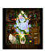
三轉教官會叫你回去找當初帶你一轉的 漢斯。跟他說要三轉，他會要你去「次元之門」打倒他的分身。
三轉教官會叫你回去找當初帶你一轉的 赫麗娜。跟他說要三轉，他會要你去「次元之門」打倒他的分身。
三轉教官會叫你回去找當初帶你一轉的 達克魯。跟他說要三轉，他會要你去「次元之門」打倒他的分身。
三轉教官會叫你回去找當初帶你一轉的 卡伊琳。跟他說要三轉，他會要你去「次元之門」打倒他的分身。
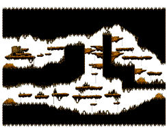
門在「迷霧森林 / 螞蟻礦坑」 · 在地圖最右邊。點門就會被送進異次元（光明水晶道路）。黑色計程車下車就是螞蟻礦坑，往最右邊走就看到門
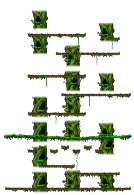
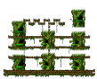
門在「隱密之地 / 巫婆森林Ⅱ」 · 在地圖右上方。點門就會被送進異次元（光明水晶道路）。巫婆森林Ⅱ在隱密之地，從魔法森林南郊進智慧森林一路往裡走
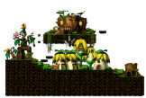
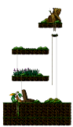
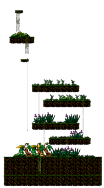
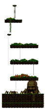
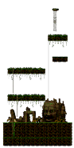
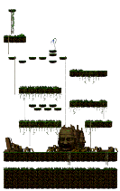
門在「迷霧森林 / 森林迷宮V」 · 在地圖最右邊。點門就會被送進異次元（光明水晶道路）。從奇幻村下方的屋子進森林迷宮，一路走到森林迷宮V
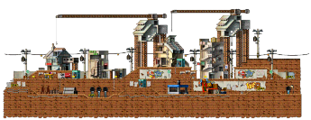
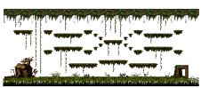
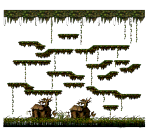
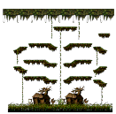
門在「隱密之地 / 猴子沼澤地Ⅱ」 · 在地圖右上方。點門就會被送進異次元（光明水晶道路）。猴子沼澤地Ⅱ在墮落城市下面的隱密之地
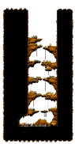
門在「迷霧森林 / 火獨眼獸洞穴II」 · 在地圖右上方。點門就會被送進異次元（光明水晶道路）。黑色計程車到螞蟻礦坑後，從最左邊下到火獨眼獸洞穴I，再往下一層就是II
攻擊模式：只會近戰：兩種揮擊（傷害 380／410，打前方約 110 的範圍）。站在它前面就會被掃到，繞到它背後或拉開距離打最安全。另外有 2 個技能動作。
進去之後找到分身，限時 20 分鐘打倒它，會拿到 黑符。打完點旁邊的「閃耀的水晶」就會送回原來的城市。
黑符：「在異界打退分身後獲取的道符。」
攻擊模式：三種魔法攻擊（魔攻 335），範圍是它左右各 150、頭上 150 的一整塊，站旁邊也會中。走得很慢（速度 −50），遠程職業可以邊退邊打。另外有 1 個技能動作。
進去之後找到分身，限時 20 分鐘打倒它，會拿到 黑符。打完點旁邊的「閃耀的水晶」就會送回原來的城市。
黑符：「在異界打退分身後獲取的道符。」
攻擊模式：兩種射箭（傷害 300／350，射程 300），是遠程，躲不太掉，靠補血硬吃。另外有 1 個技能動作。
進去之後找到分身，限時 20 分鐘打倒它，會拿到 黑符。打完點旁邊的「閃耀的水晶」就會送回原來的城市。
黑符：「在異界打退分身後獲取的道符。」
攻擊模式：兩種丟飛鏢（傷害 300／350，射程 300），第二種是旋轉飛出去的。另外有 2 個技能動作。
進去之後找到分身，限時 20 分鐘打倒它，會拿到 黑符。打完點旁邊的「閃耀的水晶」就會送回原來的城市。
黑符：「在異界打退分身後獲取的道符。」
攻擊模式：四種拳腳：快拳（300，近身 200）、範圍掃（340，前方 110）、減速拳（260，中了會變慢）、重擊（380，前方 110）。會叫出「卡伊琳分身的分身」，招式一樣、傷害約一半。另外有 2 個技能動作。
進去之後找到分身，限時 20 分鐘打倒它，會拿到 黑符。打完點旁邊的「閃耀的水晶」就會送回原來的城市。
「卡伊琳分身的分身」：Lv.80、HP 70,000、物攻 140，先清小的再打本體比較穩。
黑符：「在異界打退分身後獲取的道符。」
把 黑符 交給你的一轉教官，換到 力量項鍊。
力量項鍊：「在異界打退分身後賢者所給予的項鍊。」
回到 艾爾納斯酋長官邸，把 力量項鍊 交給三轉教官。他會要你去接受「智慧的考驗」。
身上帶 黑暗水晶（至少 1 顆，多帶保險）。到「險惡的絕壁II」右上方的傳送點進「雪原聖地」，找 神聖的石頭。
點 神聖的石頭，交一顆 黑暗水晶，它會問 5 題。全對才給 智慧項鍊；錯一題就中斷，下次再點要再交一顆。題目在下面的題庫找。
智慧項鍊：「在聖地被肯定了智慧後所獲得的項鍊。」
題庫整理自玩家社群網站「楓葉雨」，版本不同題目可能不一樣，答案以遊戲內為準。
回 艾爾納斯酋長官邸，把 智慧項鍊 交給三轉教官，就轉職了。二轉是什麼就變成對應的三轉，看上面「三轉之後變成什麼」。
三轉完成後去找 達利額（魔法森林、勇士之村、墮落城市、奇幻村、鯨魚號碼頭 都有他，在地圖右上角附近），任務「元老冒險家」會給 老練冒險家勳章。
冒險家3次轉職結束後就能獲得<元老冒險家>稱號。 完成3次轉職的榮譽冒險家可以獲得禮物 <元老冒險家>稱號。去找每個村莊的NPC 達利額吧。